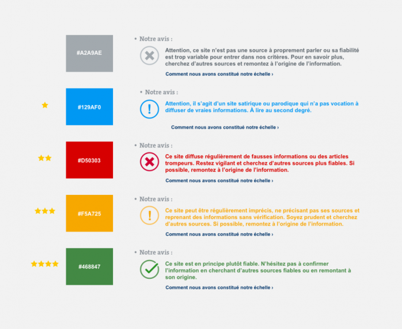
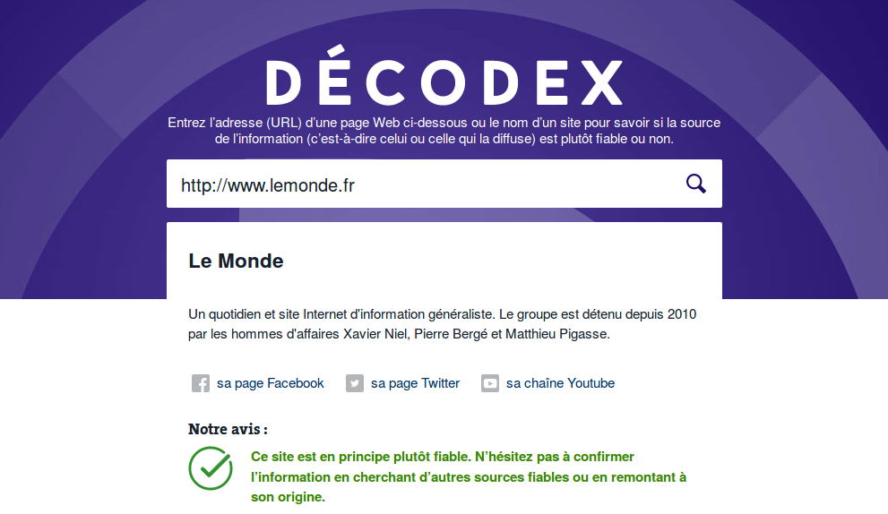
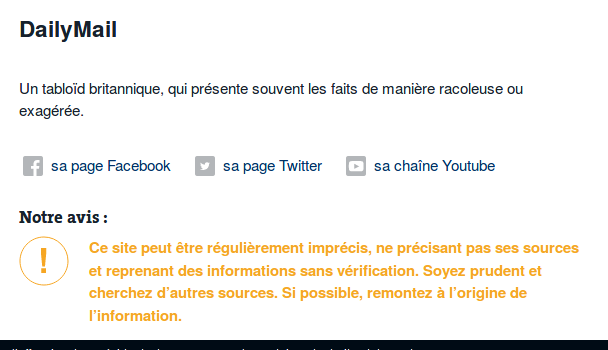

L'offensive Décodex, et la contre-offensive
Acte I : L'offensive décodex
Le dispositif
Tout commence le premier février de cette année, lorsque l'équipe des décodeurs du Monde lance "Décodex", présenté comme un "outil de vérification de l'information" Le Monde, 23/01/2017. L'enjeu est annoncé :
Le "décodex" consiste donc en un catalogue de sites d'"information", tous affublés d'un label parmi 5 possibilités :
- Label gris, qui signifie que le site est trop hétérogène pour conclure quand à sa fiabilité. C'est par exemple le cas de réseaux sociaux comme twitter.
- Label bleu, pour indiquer un site à vocation humoristique, "satirique".
- Label rouge, pour identifier les sites "diffusant régulièrement de fausses informations ou des articles trompeurs".
- Label orange, pour désigner les sites "regulièrement imprécis, ne précisant par leurs sources et reprenant des informations sans vérifications".
- Enfin, en vert, sont labelisés les sites "en principe plutôt fiables".

L'équipe du Monde met à disposition des utilisateurs plusieurs moyens pour accéder au label d'un site : * Une barre de recherche sur le site du monde. * Des "plugins" (ou "greffons") pour les navigateurs chrome et firefox, qui affiche le code couleur correspondant en haut à droite de chaque page ou onglet que vous êtes en train de lire. * Un bot facebook.
En plus du code couleur associé à chaque site recensé, une description rapide du média. Par exemple, dans le cas du site http://lemonde.fr/, bien sûr catalogué en vert :

Pour les sites catalogués d'une autre couleur, comme celui du Daily Mail, récemment déclassé comme source fiable par la communauté de wikipédia FIXME REFERENCE, le résultat est le suivant :

On notera l'absence de justification pour ce cas particulier, mais celle-ci n'est pas systématique. Certains labels sont justifiés rapidement dans la description ou par des ressources supplémentaires.
On peut d'ores et déjà souligner l'importance du dispositif, par les ressources qu'il a mobilisées : * La constitution du catalogue, qui suit des discussions dans l'équipe, nécessite un minimum de concertation, et donc de temps. * Le développement d'une interface intégrée sur le site du Monde et clairement mise en avant qui nécessite au moins un développeur. * Et de même le développement d'interfaces pour les applications tierces Firefox, Chrome et Facebook qui requiert aussi une main d'oeuvre dédiée.
Alors pourquoi donc un tel dispositif, qui a demandé des centaines d'heures de travail et mobilisé toutes ces personnes ? Les décodeurs expliquent avoir réalisé qu'après les attentats du 13 novembre 2015 et les fausses informations propagées sur les réseaux à leur sujet, une "désintoxication" au cas par cas était vaine Arrêt sur images, 25/01/2017. Et c'est alors que serait née l'idée du "décodex". Mais cela remonte à un an, et les véritables raisons, celles auxquelles on doit vraiment le décodex, sont liées de l'actualité plus récente. Dans son article d'introduction de son nouvel outil Le Monde, 23/01/2017,
Acte II : La contre-offensive
http://www.arretsurimages.net/articles/2017-01-25/Comment-le-Decodex-du-Monde-va-labelliser-l-infaux-en-ligne-id9493
Comments